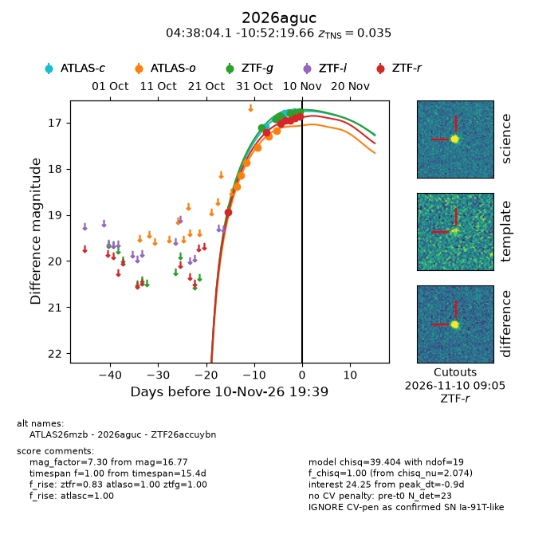
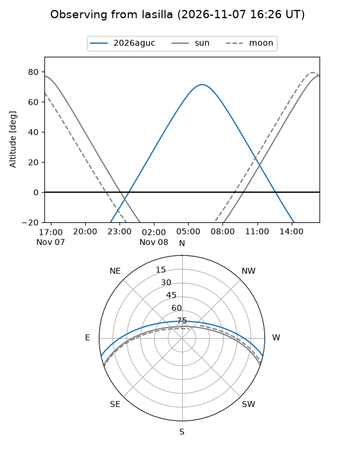
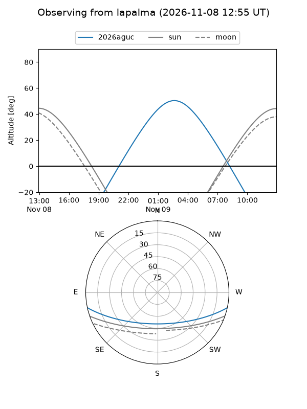
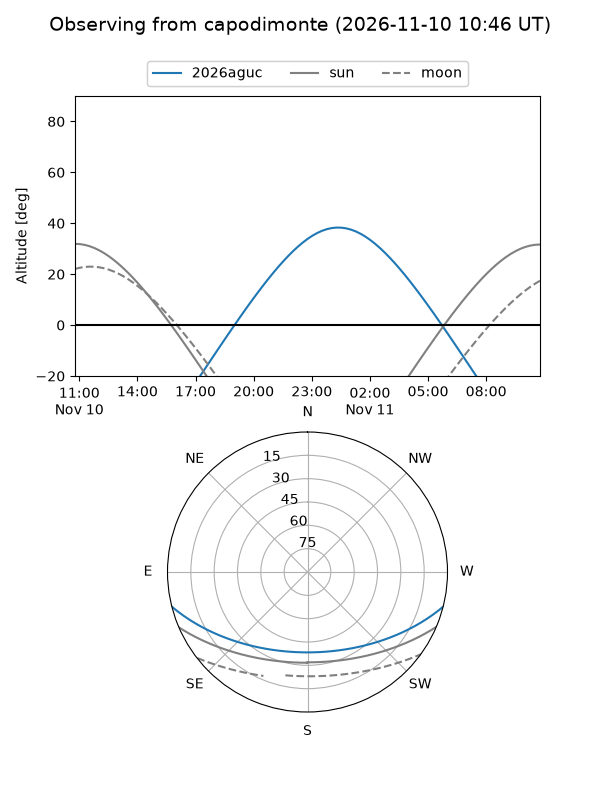
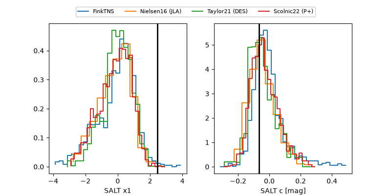

2026aguc
Target 2026aguc at 2026-11-10 19:42
Aliases and brokers:
FINK-ZTF: ztf.fink-portal.org/ZTF26accuybn
Lasair-ZTF: lasair-ztf.lsst.ac.uk/objects/ZTF26accuybn
ALeRCE-ZTF: alerce.online/object/ZTF26accuybn
YSE-PZ: ziggy.ucolick.org/yse/transient_detail/2026aguc
TNS name: wis-tns.org/object/2026aguc
Direct TNS query: direct search
alt names
ZTF26accuybn (ztf,fink_ztf)
2026aguc (tns,yse)
ATLAS26mzb (atlas)
Coordinates:
equatorial (ra, dec) = 69.5172,-10.87213
equatorial (HMS+DMS) = 04:38:04.12,-10:52:19.66
galactic (l, b) = (207.4828,-34.49950)
Flags:
TNS type: SN Ia-91T-like
TNS redshift: 0.0350
peak dt: -0.9
Photometry:
last atlasc=16.76, atlaso=17.18, ztfg=16.77, ztfr=16.87
4 atlasc, 6 atlaso, 6 ztfg, 7 ztfr detections
Lightcurve

Visibility



Additional plots
